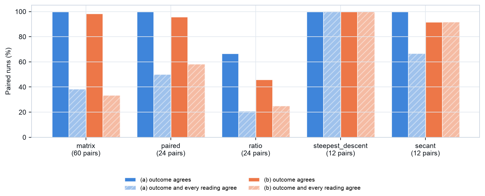
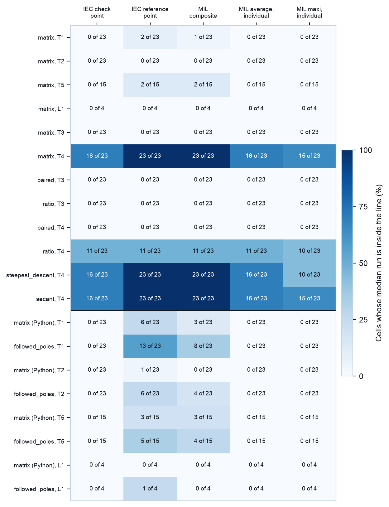
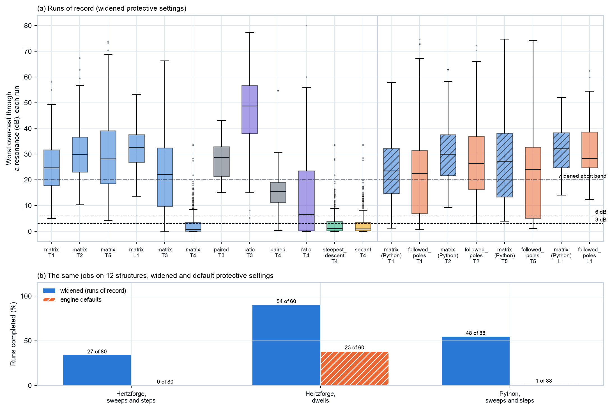
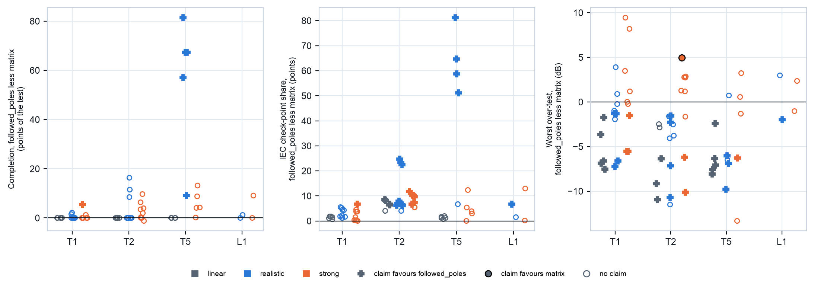

Hertzforge Journal
Six Control Laws for Multi-Shaker Sine Testing: The Laws, Their Build in Hertzforge, and How Each Scores on the MIMO Sine Suite
Research Article
EvidenceSimulator. Closed-loop runs of Hertzforge's five MIMO Sine control laws and one candidate law on the Open Benchmark Set's MIMO Sine suite, draft 0.1: 380 generated structures on five systems, five tests and a limit case, 4,140 runs in the Hertzforge version and 2,200 in the Python version, one sequence of measurement noise, every finding a claim of a rule fixed before an independent audit on 230 held-back problems. The five shipped laws ran as Hertzforge's Rust law mathematics inside its shipped MIMO Sine engine, on the simulator, driven by a closed-loop runner built for the study. The candidate, followed poles, ran only in the suite's Python harness, beside the Python port of matrix; its Rust build in Hertzforge was made after the study.
Abstract
Hertzforge, an open-source structural dynamics suite, ships five control laws for sine tests with several shakers: matrix, its default, which corrects the drive through the inverse of a measured model and carries the drive along a sweep; paired, which pairs each control with one shaker; ratio, an amplitude-ratio law; and steepest_descent and secant, two published laws for a dwell. This article describes each law, its build in Hertzforge’s Rust law mathematics, and how each scores on the MIMO Sine suite of the Open Benchmark Set, draft 0.1, under the tolerances of IEC 60068-2-6 and MIL-STD-810H Method 514.8: 4,140 runs on 380 structures, each finding a claim of a rule fixed before an audit on held-back structures. A sixth law, followed poles, which follows the frequency and damping of the modes near the tone, entered the study after a screen that no candidate passed, and runs in the suite’s Python version only. At a dwell, matrix, steepest_descent and secant complete 98, 98 and 97 percent of their runs, and each is inside the IEC check-point band in the median on 16 of the 23 cells: every square system, and 6 of 13 with more controls than shakers. On a sweep or a stepped sine no law’s median run is inside that band in any cell; matrix completes 37 percent of its sweeps up at one octave a minute and 25 percent of its sweeps down. Safety: the study widened the engine’s control abort band from 3 to 20 dB so that runs would go on far enough to be read, and 96 percent of the scored sweeps and stepped sines then put a resonance more than 6 dB over its reference (70 percent of all of them); at the engine’s default protections, 0 of 80 sweeps and stepped sines on a sample of 12 structures completed, against 27 with the band widened. paired completes 0 of its 380 stepped sines and ratio 4. The followed-poles law completes more sweeps than the Python matrix (52 against 45 percent up, 53 against 34 percent down), and over-tests less in 12 of 23 cells of the slow sweep up and more in one cell of the fast one. On the held-back structures, 1,897 of the 2,331 claims about the laws hold, 378 hold weaker and 56 do not hold. Everything here is simulation.
Summary
A sine test with several shakers plays one tone on every shaker at once, reads the amplitude and phase of every control, and corrects the drive at every update. The rule that makes the correction is the control law. This article describes Hertzforge’s five MIMO Sine laws and one candidate, how each is built and how the study ran it, and how each scores on the MIMO Sine suite of the Open Benchmark Set, draft 0.1, proposed in a companion article (Cross 2026f). The suite gives every law the same 380 problems on five systems and reads each run under several readings: completion, the share of the test inside IEC 60068-2-6’s tolerance at each control (International Electrotechnical Commission 2007), the worst over-test on the way through a resonance, and the reference-point and Method 514.8 lines (U.S. Department of Defense 2019). No law is graded as a whole. Each statement below that compares laws, or places a law inside or outside a line, is a claim of the suite’s claims rule, cited by its id; anything else is marked “not a claim of the rule”. An audit on held-back structures, which no run of the study had seen, tested every claim; Section 5.7 gives its verdicts.
- At a dwell, three laws are inside the IEC check-point band on most cells. matrix, steepest_descent and secant complete 374, 372 and 368 of 380 dwells. Each is inside the band in the median on every square system (10 of 10 cells; for matrix R0037 and the rest) and on 6 of 13 cells with more controls than shakers. Their differences are small: the rule finds a difference in 2 cells (R0674) and none between matrix and secant. On the held-back structures every one of matrix’s inside claims holds or holds weaker, while 3 of steepest_descent’s and 2 of secant’s do not hold, all on the 6 x 6 system (Section 5.2).
- ratio and paired at a dwell. ratio completes 90 percent of its dwells and is inside the band on 10 of 10 square cells and 1 of 13 others; on the held-back structures 2 of those 11 do not hold. paired completes 45 percent and is outside the band on every cell (R0042 and the rest), by a median of 7.2 to 22.8 dB.
- On a sweep or a stepped sine no law is inside the check-point band in the median of any cell (0 of 264 level claims). matrix completes 37 percent of its sweeps up at one octave a minute, 57 percent at four, and 25 percent of its sweeps down; the share of a sweep run inside the band, counting a run that stopped as covering only what it ran, has a median of 40 percent up and 9 percent down.
- Safety. For the study the engine’s control abort band was widened from 3 to 20 dB and its divergence stop from 1 to 60 s, so that runs would go on far enough to be read. Under those settings 96 percent of the scored Hertzforge sweeps and stepped sines put a resonance more than 6 dB over its reference at a control or a held-out gauge (70 percent of all of them), and 15 percent of matrix’s dwells. The largest single over-tests are 80.0 dB (ratio, a dwell) and 73.9 dB (matrix, a sweep down). At the engine’s default settings, 0 of 80 Hertzforge sweeps and stepped sines on a sample of 12 structures completed, and 23 of 60 dwells: the defaults stop the test so that the operator looks at the data.
- paired and ratio on a stepped sine. paired completes 0 of 380 stepped sines and ratio 4; matrix is ahead of paired on completion in 23 of 23 cells (R0012); on the held-back structures, R0012 holds weaker (the direction held and the size fell outside the study’s quartiles). Both are amplitude laws with no model of the coupling between shakers or none along frequency, on coupled structures; Section 6.1 gives where they stop.
- Followed poles tracks the poles of the modes near the tone on a modal fit of the identification. It ran in the Python version only, beside the Python port of matrix on the same exact identification. It completes 52, 70 and 53 percent of the three sweeps against 45, 59 and 34 percent. The rule finds it over-testing less in 12 of 23 cells of the slow sweep up (R1619), inside the band for more of the fast sweep in 19 of 23 cells (R1630), and over-testing more in one cell (R2018); on the held-back structures, R1630 and R2018 hold weaker (the direction held and the size fell outside the study’s quartiles) and the other one holds. It was admitted after the screen, post hoc, and was built in Rust after the study.
- What did not work. Three more candidates (the family inverse, the level ladder and the dither identification) and four predictive leads built on followed poles were screened and left out. Section 6 gives each one’s idea, readings and the reason as far as it is known.
- The audit. On the held-back structures, 1,897 of the 2,331 claims about the laws hold, 378 hold weaker (the direction held and the size fell outside the study’s quartiles) and 56 do not hold; of the 388 claims of followed poles, 311 hold, 60 hold weaker and 17 do not hold. Every claim was tested.
- Implemented. The five laws’ mathematics is on Hertzforge’s main branch and each is a selectable law; the study’s runner and followed poles’ Rust build are on main too. The study’s runs of followed poles ran the suite’s Python code.
1. The Test and the Laws’ Common Frame
A sine test holds one tone at a time. At the tone’s frequency every shaker plays a sine of the same frequency, so the drives are one complex vector (an amplitude and a phase per shaker), and the controls, once settled, are , with the structure’s response from drives to controls at that frequency. The test gives a reference , an amplitude (and, for most laws, a phase) at every control. A sweep moves the tone through the band at a set rate; a stepped sine holds it at a grid of frequencies in turn; a dwell holds it at one frequency, here the first resonance in the band.
Hertzforge’s MIMO Sine engine runs the loop and the law makes one decision. The engine measures before the test, at its own low level and with measurement noise, and hands the law that identification. At every update it reads each control with a tracking filter (four one-pole sections on the heterodyned signal), asks the law for the next drive, and plays it. Around the law it keeps the same guards for every law: a cap on how far a drive may change in one update, a drive ceiling, an alarm band and an abort band on the control error, a divergence stop when the caps bind for too long, settle windows at every level move and every step in which nothing is judged, and a ladder that brings the test up through rungs at -12, -9, -6, -3, 0 dB of full level, each held 2 s. So a law decides only the drive, and the suite’s readings say how well that decision served the test.
The laws differ in what model they use and how they move along frequency. Some use the measured throughout; one learns its own; one uses no model of the coupling at all. In a sweep the tone never rests, so a law that waits to read each correction settled falls behind; at a dwell every law has time.
2. The Six Laws
Notation: is the identification at the tone, its regularized inverse (least squares where there are more controls than drives, least norm where there are more drives, regularized at 0.001 of its largest singular value), the controls as the tracking filters read them, the reference, the drive in force as played (after every guard), and the gain of the engine’s loop-speed rule, set every update from the tracking filter’s delay and the identification’s group delay near the tone. The five shipped laws and their keys are in Hertzforge’s guide (Hertzforge contributors 2026), section “The built-in MIMO Sine laws”; the numbers below are the guide’s defaults.
2.1 matrix
matrix is the default law and the only shipped law that takes every test: sweeps, stepped sines and dwells, with a reference that gives phases or amplitudes only. Each update it gives
with the frequency of the next interval, the reference told the update before, the reference passed through the loop’s own delay, and the part of the last carry that a change cap cut. The last term is the published correction through a fixed inverse, (Qiu et al. 2019; Zhang et al. 2017; Cross 2026e), with the published gain of about one half (0.5, a parameter) replaced by the loop-speed rule. The other terms are Hertzforge’s own. The carry, weighted by (default 0.67), moves the drive by the model’s own change between this frequency and the next, so that in a sweep the drive is already near where the next frequency needs it; a model error common to and cancels in it. The reference’s change is carried through the model at full weight, so a profile’s breakpoint is followed the update it is told. The correction is aimed at , the reference as the trackers read it, so that while the reference moves the filter’s trail is not taken for a control error. With more drives than controls, the part of the drive the controls cannot see is removed every update. The model is the identification with its resonances fitted and the rest smoothed over 8 lines.
The guide states the law’s limit: it assumes the structure responds at test level as it did at the identification’s level. Where a resonance moves by less than a quarter of its half-power bandwidth, expect the same control as on a linear structure; between a quarter and one bandwidth, errors over 3 dB at that resonance; past about one bandwidth the loop can be lost. On the testbed’s linear four-by-four structure it completed 5 of 5 dwells, 5 of 5 stepped sines and 16 of 20 sweeps at one octave a minute.
2.2 paired
paired pairs control with drive and uses nothing of the coupling. Every update each drive’s amplitude moves toward its control’s ratio of wanted to measured amplitude, and its phase is left to the pair:
Its first drive is the one this rule settles to on the identification at the tone (the rule run on until every control is within 0.01 dB, at most 200 rounds). It takes dwells and stepped sines. It is Hertzforge’s simplest law, the template a contributor copies, and not a published multi-shaker law; the guide says it is for structures whose pairs are weakly coupled, each control dominated by its own shaker. The suite’s frames are coupled, so its results here say how such a loop behaves where that condition does not hold.
2.3 ratio
ratio is the published amplitude-ratio law of Zhang, Chen and He (Zhang et al. 2015; Cross 2026e), moved onto the inverse of the model. It plays with one factor per control, updated once the reading has settled from :
with the compression (default 1; larger is gentler). The source applies the factor to each drive on a square setup; the default here applies it to each control’s reference, which needs no pairing of controls with shakers. The law has no gain; its pace is how often it updates. It takes dwells and stepped sines, with amplitude-only references.
2.4 steepest_descent
steepest_descent is the published steepest-descent correction of Musella and co-authors (Musella et al. 2019, 2020; Cross 2026e):
with the largest singular value of . Its first drive is the inverse drive . It is slow in the directions of with small singular values. It takes dwells only. On the testbed’s four-by-four structure it completed 5 of 5 dwells, 2 of 5 stepped sines and none of 20 sweeps.
2.5 secant
secant is the adaptive law of Underwood’s patent (Underwood 1994; Cross 2026e): a two-step cycle that probes, measures the complex gain the probe produced, steps by it, and updates its inverse model by a rank-one secant formula. With and ,
where the probe was played and read as , and and make the model map the last change of control onto the last change of drive. Each step waits for the response to settle (5 times the filter’s and the structure’s delays), so its pace is the settle wait; the probe’s weight starts at 0.1. At a level move the readings the cycle holds are scaled with the level, so the probe is read against the drive in force. The survey found no published test of the patent’s printed equations (Cross 2026e). It takes dwells only.
2.6 Followed Poles
A structure whose joints soften or stiffen with level moves the frequency and damping of its modes at test level and leaves their shapes nearly alone. matrix’s inverse is the low-level one, so near a mode that has moved by a bandwidth or more its correction points the wrong way. Followed poles keeps the identification as a modal model plus a smooth remainder,
with the shape at the controls, the participation at the drives, and the remainder chosen so the model equals the identification at low level. During the test it refits the frequency and damping of the modes within 4 bandwidths of the tone from the operating drives and responses of the last 40 updates, with a prior that anchors each to its last value:
A mode is moved only where the data can tell a shift from none, by at most 0.25 of a bandwidth a fit. The drive comes from the carried loop of Section 2.1 in its research form (gain 0.5 with the loop-speed rule) through the inverse of . A prediction gate compares the followed model’s residual with the frozen model’s over the window, and uses the frozen inverse while the followed one is worse by a ratio of 2; both predict the same measurements, so the noise cancels from the comparison.
The modal fit under followed poles is the suite’s M7d: poly-reference least-squares complex-frequency fits (pLSCF) over half-octave ranges, orders 12 to 24, poles clustered over the orders (1 percent in frequency, 25 percent in damping, participation MAC 0.8), then real rank-one residues by least squares in the frequency domain (Peeters et al. 2004; Guillaume et al. 2003; Steffensen et al. 2025; Cauberghe et al. 2005). Before the fit a pure delay is taken out of the identification and put back on the residues: the delay of the simulator’s block, read from the structure file (4 samples on the linear tier, 2 on the jointed tiers), the delay a loopback measures on a real station. Section 6.6 gives why it is not the engine’s measured lag.
The idea that frequency and damping move while the shapes stay is the one Hertzforge’s followed laws for shock use (Cross 2026a). The anchored, gated, pooled estimator is this work’s own; its derivation and the research runs that shaped it are in the benchmark’s record (Cross 2026b).
2.7 The Screen, and How Followed Poles Entered
Before the study, four candidates were screened on the study’s own structures 0, 1, 2 of the 6 x 6 and 6 x 12 systems, realistic and strong (12 structures, 6 a cell), with the linear tier on the same structures as a control (18 in all, 344 runs). The candidates were the family inverse, followed poles, the level ladder and the dither identification (recursive least squares on a dither at the dwell); each is described in Section 6. The rule, written before the runs: a candidate enters if, on at least one test and tier, it ends in tolerance (completed, and inside the IEC check-point band at every judged update) on more structures than matrix, with its median worst over-test not worse than matrix’s by more than 1 dB.
No candidate passed, and on the sweeps and stepped sines, the tests the candidates were built for, the rule could not have passed one: on every realistic and strong sweep and stepped sine of the screen no run of any law ended in tolerance, matrix included (0 of 6 in every such cell); only the dwells and matrix’s linear stepped sine (3 of 6) did. On the graded readings followed poles was the strongest candidate: it completed 16 of 36 nonlinear sweeps against matrix’s 9, its p95 control error was lower on 30 of 33 paired structures and its IEC share higher on 28, but on the strong tier it over-tested more (paired medians +0.35 to +7.19 dB). Read with “completed” in place of “ended in tolerance”, a reading added after the runs, the rule would have passed it on 4 cells. Kevin Cross admitted it on that record (“Include [followed poles]”). The admission is post hoc and is recorded as such: each of its 388 claims carries the mark admitted_after_screen, the screen ran on study structures, and the held-back structures are the test of whether its claims stand. The family inverse, the level ladder and the dither identification were left out.
3. Their Build in Hertzforge, and How the Study Ran Them
3.1 What Is on Hertzforge’s Main Branch
The five laws’ mathematics is the crate hertzforge-mimo-sine-law-math: matrix.rs, paired.rs, ratio.rs, steepest.rs and secant.rs, with the shared parts in modal.rs (the modal model), speed.rs (the loop-speed rule), setup.rs, linalg.rs, law.rs and readings.rs, and the crate’s parity vectors in its test data. The crate hertzforge-mimo-sine-laws makes them selectable (choice.rs, facts.rs, check.rs, and wasm.rs for law files), and hertzforge-mimo-sine is the engine that runs them. Each law also builds as a law file (laws/mimo-sine-matrix and the others) from the same mathematics; over whole recorded runs the law file gives the native law’s drives within rounding (matrix within about 1e-7, because its modal fit is an iterative search that the platforms’ rounding moves) (Hertzforge contributors 2026).
Followed poles was built in Rust after the study, in the same crate as the five laws. The station’s delay is one of its settings (station_delay_s), so the modal fit can take the right delay out; it is refused when the setting is left at zero. Sweeps only. On the parity cases its fit agrees with the Python version’s to about 2.4e-11 and its drives to about 3.9e-13. Where the stable-pole selection splits one mode over two clusters, the Rust fit keeps the mode once and the Python fit keeps it twice. It is selectable on the simulator only: it fails the law check’s steep reference, so a hardware station refuses it.
3.2 How the Study Ran Them
The suite has two versions that run the same cases and write the same run file, read by the same scorer (Cross 2026f).
- The Hertzforge version is a closed-loop runner on Hertzforge’s own MIMO Sine engine: the engine as shipped, its identification measured at its own low level with noise, its tracking filters, guards, ladder and pipeline, and the five laws as Rust law mathematics, on the simulator station. The runner is an example program, on Hertzforge’s main branch since the study; the three MIMO Sine crates are the same at the commit the study ran and on main at
a501b9b9f89d75450f6dbae1bcb4564d1ae82d15(a diff between the two lists 0 files in them). Every Hertzforge run’s card names the same runner (one SHA-256 over 4,140 runs). - The Python version is the suite’s own harness, which restates the engine’s loop in Python and runs Python ports of the laws. It hands the law the structure’s exact small-signal response as the identification, with no noise and every line trusted. It is the only version that runs followed poles, and it ran matrix beside it, so every comparison of followed poles is with the Python matrix on the same structures and the same identification. Neither of the Python version’s laws is compared with a Hertzforge run.
Every run of record used the engine’s widened protective settings: the control abort band 20 dB in place of 3, the abort count 100 updates in place of 3, the divergence stop 60 s in place of 1, the alarm band 1.5 dB as by default. At the defaults most runs stop early on a structure that changes with level, and the readings would say only that they stopped. The default settings were run on a sample (Section 5.4). Every law ran at its defaults; none was tuned on the suite.
3.3 Parity of the Two Versions
Parity was shown in two places, and they show different things.
Against Hertzforge’s parity vectors. The Python ports are held to the shipped laws’ parity vectors, copied from the Hertzforge repository: 30 runs (each law and schedule), on the vectors’ own small structure, not on suite problems. The largest relative difference of drive and controls is 5.6e-15, and a different law is shown to miss them by more than 0.1. The vectors have a flat reference, no guards and the quasi-steady loop, so they cannot see matrix’s carry of the reference’s change, its aimed reference or its carry of what a cap cut; the Python matrix restates those from matrix.rs and a separate test shows the vectors’ form and the restated form part on a sloped reference. They also cannot see the modal fit: the Python matrix fits every group of modes jointly and carries everywhere, where the shipped fit limits its groups and carries nothing in the windows it leaves out.
Between the two versions on suite problems. The agreement sample is 12 suite structures (the 6 x 6, 6 x 12 and 3 x 12 systems, linear and realistic, the first two structures of each), every test each law takes: 132 pairs of runs. A pair agrees on its outcome when both runs end the same way at the same place, and on its readings when every reading of the two cards is within a tolerance set against its use in the study. Two comparisons were made: (a) both versions’ laws on the exact response, and (b) each version on its own identification, the Python version handed the Hertzforge run’s measured one. On (a), 124 of 132 pairs agree on their outcome and 60 on every reading; on (b), 116 and 63 (Figure 1). ratio’s and paired’s stepped sines aborted in both versions in all 12 pairs of each, in both comparisons. On (a) every outcome that differs is one of ratio’s stepped sines (8 pairs), aborted in both versions at different places. On (b) 12 of ratio’s stepped sines differ, and one pair each of ratio’s dwell, secant’s dwell, matrix’s sweep down and paired’s stepped sine. Where a diverging loop ends is not reproducible between versions. The readings that most often part are the worst-point readings of a sweep (the worst excursion, the worst over-test), which rest on one update; the shares and medians agree more often. This is not a claim of the rule.

This figure: Data (CSV) Code Picture (PNG)

So the two versions are two implementations of the same loop that agree on how most runs end and less often on every reading. The claims rule never pairs a reading of one version with one of the other: matrix’s Hertzforge claims are among Hertzforge runs, and those of followed poles against the Python matrix.
4. The Study
The suite’s 380 structures are the Random suite’s, on five systems written here as shakers by controls: 3 x 12, 6 x 12, 12 x 24, 6 x 6 and 12 x 12. Each system has a linear, a realistic and a strong tier, whose joints soften or stiffen with level by a realistic amount and by more; on the 6 x 12 and 6 x 6 systems four more kinds hold softening only or hardening only at each of the two sizes. A cell is one system and structure kind on one test; there are 23 cells on each of T1 to T4, 15 on T5 and 4 on L1 (Cross 2026f).
The tests, each run up a ladder before its judged level:
- T1, a log sweep up from 20 to 2,000 Hz at one octave a minute (398.6 s); T2, the same at four octaves a minute (99.7 s);
- T3, a stepped sine at 12 steps an octave (81 steps), each held 10 time constants of the slowest mode in band;
- T4, a dwell at the first resonance in band, held 30 time constants of its mode and at least 10 s, the first 20 not judged;
- T5, a log sweep down at one octave a minute, on 300 structures;
- L1, T1 with one limit channel, on 40 structures.
The Hertzforge version ran matrix on every test, paired and ratio on T3 and T4, and steepest_descent and secant on T4: 4,140 runs. The Python version ran matrix and followed poles on T1, T2, T5 and L1: 2,200 runs. One sequence of measurement noise was used, the same for every law on a problem and test. 62 Hertzforge runs never started, because the engine’s coherence gate held their identification; they count as covering nothing.
The readings. Each run has three primary readings, taken from the scorer’s card:
- the IEC share, the share of the test, from where full level began, run inside the IEC 60068-2-6 check-point band (each control within 25 percent up to 500 Hz and 50 percent above), times the share of the test covered: so a run that stopped halfway reads at most one half, and an unscored run reads 0;
- the worst over-test, the largest error over the reference at the controls and held-out gauges on the way through each mode’s half-power band, in dB; missing for an unscored run;
- the completion, 1 for a completed run and otherwise the share of the test covered at full level.
The scorer also reads each line of the standards: the IEC check point, the IEC reference point (the average of the controls within 15 percent), Method 514.8’s composite (10 percent) and its average and maxi individual-control lines (U.S. Department of Defense 2019). Phase is reported, not judged.
The claims rule. The claims were made by a rule fixed before the audit and frozen with the readings (Cross 2026f). For every two laws that ran the same test in a cell, the rule pairs the structures and makes a claim where the median difference of a reading is beyond its threshold (0.05 in a share, 0.2 dB) and most of the pairs agree in sign: at least 6 in 10 beyond the threshold on the median’s side and at most 2 in 10 on the other. For every law in every cell and every line it makes a level claim, inside or outside, from the median worst excursion over the line, an unscored run counting as outside. Of the rule’s 2,544 claims, 2,331 are about laws (1,895 levels and 436 paired differences); the other 213 are effects of the structure, for the suite paper. No claim was added after the freeze (0).
The audit. The audit runs every job on 230 held-back problems (structures 90, 91, 93, 94 and 96 to 101 of every cell) and judges each claim: a level claim holds if the audit’s median is on its side of the line and inside the study’s quartiles, is weaker if it is on its side but outside them, and does not hold otherwise; a paired difference holds if the audit’s median has its sign, is beyond the threshold and is inside the study’s quartiles, is weaker if it has the sign and is beyond the threshold but lies outside them, and does not hold otherwise. Of the 2,331 law claims, 1,897 hold, 378 are weaker and 56 do not hold. Every claim was tested. Section 5.7 gives them by law.
Two more sets. The engine’s default protective settings were run on 12 structures, the first two of each tier of the 6 x 6 and 6 x 12 systems, for every job: 140 Hertzforge and 88 Python runs. And 3 repeats of every job on 2 structures read how far one run moves when it is run again: 60 Hertzforge and 48 Python runs.
5. Results
5.1 How Often Each Law Completes, and How Close It Holds
Figure 2 gives each job’s completions and median readings, tier by tier.
![Three panels of grouped bars, one group per law and test: twelve Hertzforge jobs (matrix on T1, T2, T3, T4, T5 and L1; paired and ratio on T3 and T4; steepest_descent and secant on T4) and eight Python jobs (matrix and followed_poles on T1, T2, T5 and L1). The dwell jobs of matrix, steepest_descent and secant complete nearly every run on every tier with a median IEC share near 100 percent and a median over-test from about 0 dB on the linear tier to about 3 dB on the strong. The sweeps and steps complete far less on the realistic and strong tiers than on the linear, and their median over-tests run from about 3 dB (followed_poles on the linear tier) to about 50 dB (ratio's stepped sine). paired's stepped sine completes nothing.](figures/fig1_readings.png)
This figure: Data (CSV) Code Picture (PNG)
The dwell. matrix, steepest_descent and secant complete 98, 98 and 97 percent of their dwells, and the median dwell of each is inside the IEC band for its whole length. Counted run by run, matrix’s dwell is inside the band at every judged update in 273 of 380 runs (72 percent; of its completed runs, 73 percent), steepest_descent’s in 240 (63 percent) and secant’s in 259 (68 percent). On the linear tier matrix’s dwell is inside in 100 of 100 runs, on the strong tier in 77 of 140. ratio completes 90 percent of its dwells and is inside at every update in 45 percent of them; paired completes 45 percent, none inside at every update (0 runs); its median IEC share is 0 percent and its median worst over-test 15.5 dB: the widened abort band lets a dwell go on with its controls far off the reference (Section 5.4). These run counts are not claims of the rule; the cell-level statements in Section 5.2 are.
The sweeps and the stepped sine. matrix completes 75 percent of its slow sweeps up on the linear tier, 39 on the realistic and 9 on the strong; over all tiers 37 percent of T1, 57 of T2, 42 of T3 and 25 of T5. Even a completed sweep has stretches outside the band: of matrix’s 380 slow sweeps up, none is inside at every judged update, and of all the study’s sweeps and stepped sines only 1 of matrix’s stepped sines, 2 of the slow sweeps up of followed poles and 3 of its sweeps down are. The median IEC share, which counts a stopped run as covering only what it ran, is 40 percent on T1 and 9 percent on T5. The median worst over-test on a sweep is 24.7 dB on T1 and 15.0 dB on the linear tier alone, where nothing moves with level: on these lightly damped frames the over-test at the worst resonance of a sweep, at a control or a held-out gauge, is large even when the controls are held well on most of the band. matrix completes fewer sweeps down than up in both versions (25 against 37 percent in the Hertzforge version, 34 against 45 in the Python), most of all on the realistic tier (3 of 100 down); the followed-poles law completes about as many down as up (53 and 52 percent). The sweep down runs on fewer structures than the sweeps up (no softening-only or hardening-only kinds), so these shares are not of the same structures, and none of this is a claim of the rule, which compares laws, not tests. On the held-back structures matrix completes 35 percent of its slow sweeps up and 24 percent of its sweeps down in the Hertzforge version, and 43 and 35 percent in the Python version; these are run counts, not claims of the rule.
5.2 Cell by Cell: The Level Claims
Figure 3 counts, for each job and each tolerance line, the cells whose median run is inside the line.

This figure: Data (CSV) Code Picture (PNG)

At a dwell matrix, steepest_descent and secant are each inside the check-point band on 16 of 23 cells (R0037, R0052 and R0057 and the rest), and inside the reference point and the composite on all 23 (R0038). Each of the three is inside on 10 of 10 square cells and on 6 of 13 with more controls than shakers, and the cells outside are the same seven for all three (R0313 for matrix), with median excursions of 0.2 to 11.1 dB for matrix. They are the cells of the 3 x 12, 6 x 12 and 12 x 24 systems whose joints soften (realistic, strong and softening only), all but the realistic 12 x 24; the linear and hardening-only cells of those systems are inside. With more controls than shakers the controls cannot all be held at once, and where the joints soften the low-level model is further off at test level; which of the two puts these cells outside was not separated. This reading of where the cells lie is not a claim of the rule. Under the maxi individual line matrix and secant are inside on 15 cells and steepest_descent on 10 (R0056 and the rest). ratio is inside the check point on 10 of 10 square cells (R0047) and 1 of 13 others (R0980), its cells outside by 12.7 to 34.9 dB. paired is outside every line on every cell (R0244). On the held-back structures, of the 16 check-point inside claims of each, 14 of matrix’s hold and 2 hold weaker; 10 of steepest_descent’s hold, 3 hold weaker and 3 do not hold (R1272, R1476 and R1609); 13 of secant’s hold, 1 holds weaker and 2 do not hold (R1481 and R1614); and of ratio’s 11, 9 hold and 2 do not (R1267 and R1403). On the other four lines, 18 of the 460 dwell level claims do not hold (R0467, R0548, R0697, R0698, R1268, R1269, R1270, R1275, R1405, R1406, R1407, R1475, R1479, R1484, R1485, R1612, R1617 and R1618), every one of them a claim of ratio, steepest_descent or secant.
On a sweep or a stepped sine no job is inside the check-point band in any cell: 0 of 134 Hertzforge level claims and 0 of 130 Python ones (for matrix’s slow sweep up, R0198 and the rest). The looser lines separate them a little. Inside the reference point, which judges the average of the controls, are 2 of matrix’s Hertzforge slow-sweep cells (R0411), 6 of the Python matrix’s (R1718) and 13 of those of followed poles (R1723); inside the composite, 1, 3 and 8. Under the individual-control lines of Method 514.8 no sweep or stepped sine of any law is inside in any cell. On the held-back structures every one of the sweep and stepped check-point claims stays outside: of the Hertzforge version’s 134, 112 hold and 22 hold weaker, and of the Python version’s 130, 104 and 26. Over all five lines, 18 of the Python version’s 650 sweep level claims do not hold: 2 of the Python matrix’s (R1898 and R1985) and 16 of those of followed poles (Section 5.5).
5.3 Law Against Law
Figure 4 gives the paired claims among the Hertzforge laws, where two laws ran the same test.
![Diverging horizontal bars, one row per pair of laws and reading. On T3 matrix is favoured over paired and over ratio in most cells on completion and IEC share, and ratio over paired in every cell on completion and IEC share. On T4 matrix, steepest_descent and secant are favoured over paired in every cell on IEC share and in about half on completion; over ratio on IEC share and over-test in about half the cells; among the three, only two cells each favour matrix and secant over steepest_descent on over-test.](figures/fig3_pairs.png)
This figure: Data (CSV) Code Picture (PNG)
Stepped sine. matrix is favoured over paired on completion in 23 of 23 cells (R0012) and on IEC share in 22 (R0011); over ratio on completion in 17 (R0015), on IEC share in 15 (R0013) and on over-test in 19 (R0014); on the held-back structures, R0012, R0015, R0013 and R0014 hold weaker (the direction held and the size fell outside the study’s quartiles) and the other one holds. ratio is favoured over paired on completion and IEC share in every cell (R0017, R0016): ratio covers more of the test before it stops; on the held-back structures, R0017 holds weaker (the direction held and the size fell outside the study’s quartiles) and the other one holds.
Dwell. The three laws with a model of the coupling are favoured over paired on IEC share in every cell (R0033, R0035, R0036) and on completion in 11 to 12 (R0228); over ratio on IEC share in 11 to 12 cells (R0229) and on over-test in 9 to 11 (R0230), and never on completion against ratio; on the held-back structures, R0228 holds weaker (the direction held and the size fell outside the study’s quartiles) and the other 5 hold. Among matrix, steepest_descent and secant the rule makes four claims, all on over-test and all against steepest_descent: matrix in 2 cells (R0674) and secant in 2 (R0685); on the held-back structures, R1385, R0685 and R1392 do not hold and the other one holds. On every other reading and cell the three differ by less than the rule can tell on these structures. So at a dwell the choice among them is not settled by these readings; matrix is the one that also sweeps. On the held-back structures, of the 373 paired claims among the Hertzforge laws, 287 hold, 74 hold weaker and 12 do not hold (R0281, R0282, R0305, R0353, R0375, R0377, R0685, R0728, R0834, R0874, R1385 and R1392).
5.4 Safety
Figure 5 gives the worst over-test of every scored run and what the default protections do.

This figure: law_worst_runs.csv law_defaults.csv facts.csv Code Picture (PNG)

With the abort band widened to 20 dB, a run goes on while its controls are far off. Of the Hertzforge sweeps and stepped sines, 96 percent of those scored put some resonance more than 6 dB over its reference (1,569 runs, 70 percent of all 2,240); of the Python ones, 91 percent of those scored (87 percent of all): of followed poles, 84 percent, and of the Python matrix,
98 percent. At a dwell, matrix put a resonance more than 6 dB over in 56 of 380 runs (15 percent), steepest_descent in 54 and secant in 55, ratio in 165 (43 percent) and paired in 152 (40 percent of all its dwells, 96 percent of those scored). The largest single over-tests are 80.0 dB (ratio, a dwell), 77.4 dB (ratio, a stepped sine) and 73.9 dB (matrix, a sweep down); the dwells of matrix, steepest_descent and secant reach 33.7, 33.6 and 33.8 dB. In a test these would be stopped long before by the default settings, by the operator or by the article’s own limits; they are what the law does when nothing stops it.
The defaults stop them. On the 12 structures run both ways, at the engine’s defaults 0 of 80 Hertzforge sweeps and stepped sines completed, against 27 in the runs of record; 23 of 60 dwells, against 54; and 1 of 88 Python sweeps, against 48. The defaults are conservative by design: the controller stops when a control is 3 dB off for 3 updates, and the operator looks at the data before going on. On a structure that changes with level, these laws at these settings will stop a sweep more often than they finish it, and an operator who widens the settings to finish it should expect the over-tests above. None of these counts is a claim of the rule. On the held-back structures, 97 percent of the scored Hertzforge sweeps and stepped sines put a resonance more than 6 dB over its reference (70 percent of all of them), and 14 percent of matrix’s dwells; these too are run counts, not claims of the rule.
5.5 Followed Poles Against the Python matrix
Figure 6 gives followed poles against the Python matrix cell by cell.

This figure: Data (CSV) Code Picture (PNG)

The followed-poles law completes 199 of 380 slow sweeps up against the Python matrix’s 171, 265 fast sweeps against 225, and 160 of 300 sweeps down against 101; the median IEC share of its sweeps down is 82 percent against 10 percent. On the realistic tier sweeping down it completes 56 of 100 against 2; on the strong tier, 4 against 0. Cell by cell, the rule favours followed poles in the cells listed below; of the claims the list cites, on the held-back structures, R1850 does not hold, R1630 and R1771 hold weaker (the direction held and the size fell outside the study’s quartiles) and the other 7 hold. The cells:
- on the slow sweep up, on over-test in 12 of 23 cells, by medians of -7.5 to -1.3 dB (R1619), and on completion and IEC share in one cell each (R1685, R1684);
- on the fast sweep up, on IEC share in 19 of 23 cells, by 6.2 to 24.8 points (R1630), and on over-test in 9 (R1728);
- on the sweep down, on completion in 5 of 15 cells, by 9.1 to 81.5 points (R1673), on IEC share in 4 (R1771) and on over-test in 9 (R1641);
- on the limit case, on IEC share and over-test in one cell each of 4 (R2158, R1850).
The rule favours matrix once: on the fast sweep up of the strong softening structures of the 6 x 12 system, where the median over-test of followed poles is 5.0 dB higher (R2018); on the held-back structures, R2018 holds weaker (the direction held and the size fell outside the study’s quartiles). The screen had seen followed poles over-test most on the same test and tier. The largest cell median against followed poles is on the slow sweep up, on the strong softening structures of the 6 x 6 system: 9.5 dB higher than matrix, where the rule makes no claim. Of the 62 claims that favour followed poles, 17 are on the linear tier, where nothing moves: the modal model itself, before anything is followed, holds the controls closer than matrix’s smoothed identification (the median slow-sweep over-test of followed poles on the linear tier is 3.9 dB against matrix’s 10.8). This is a reading of Figure 6, not a claim of the rule.
Two limits bound these results. Followed poles ran on the exact identification, which a test does not have, and in the Python version only; and it was admitted on the study’s structures after a screen on some of them. On the held-back structures, of the 388 claims of followed poles, 311 hold, 60 hold weaker and 17 do not hold: 1 of its 63 claims against matrix (R1850) and 16 of its 325 level claims (R1790, R1868, R1892, R1916, R1926, R1948, R1958, R2003, R2013, R2091, R2092, R2101, R2102, R2121, R2211 and R2212). Of the 12 claims that favour it on the slow sweep’s over-test, the verdicts are holds for 11 and weaker for 1; of the 5 that favour it on the sweep down’s completion, holds for 4 and weaker for 1.
5.6 Run Again: How Far One Run Moves
The repeats read how much of a difference one run can carry. In the Hertzforge version 5 of 60 repeat runs ended differently from the run of record, and the worst over-test moved by more than the rule’s 0.2 dB in 29 of 54 (a median move of 0.32 dB, the largest 10.1 dB): the engine’s own measured identification and its timing are not the same twice. In the Python version 4 of 48 ended differently and 7 of 48 moved beyond the threshold. So a single Hertzforge run’s worst over-test moves by more than the threshold about half the time; the rule’s claims stand on the agreement of most paired structures in a cell, not on any one run. This is not a claim of the rule.
5.7 The Audit
The audit ran every job on the 230 held-back problems: 2,490 runs in the Hertzforge version and 1,300 in the Python version. Of the 2,331 claims about the laws, 1,897 hold, 378 hold weaker (the direction held and the size fell outside the study’s quartiles) and 56 do not hold. Every claim was tested. By law, the level claims that hold are, in the Hertzforge version, 473 of matrix’s 555 and 217 of paired’s 230, neither having a level claim that does not hold; 186 of ratio’s 230, with 13 that do not hold; 92 of steepest_descent’s 115, with 6; 88 of secant’s 115, with 6; and in the Python version 243 of matrix’s 325, with 2, and 259 of the 325 of followed poles, with 16. The rest hold weaker. Every Hertzforge level claim that does not hold is at the dwell; none of the 670 on sweeps and stepped sines fails to hold. Of the paired claims, 12 among the Hertzforge laws and 1 between followed poles and matrix do not hold (Sections 5.3 and 5.5). Where a claim cited above does not hold, or holds weaker, the sentence that cites it says so. The verdicts are those of the frozen code; Section 7 gives 7 that turn on how the claims file rounds the study’s quartiles.
6. What Did Not Work
What was tried and set aside is the subject of the companion negative-result article (Cross 2026d), which gives each idea’s source, what it was told and could measure, its readings against matrix and followed poles, and why it did not work as built. This section gives the outline. Except in 6.1, the readings are the screens’ (Section 2.7), screen evidence on 12 structures that move, not claims of the rule.
6.1 paired and ratio on the Stepped Sine
paired completes 0 of 380 stepped sines, and 185 of them abort on the ladder’s first rung; ratio completes 4, and 348 of its runs abort at full level. matrix completes 160, most of its aborts at full level on the jointed tiers. At the dwell the same two laws complete more (45 and 90 percent). As far as is known, paired has no model of the coupling, and on these frames each control is moved by every shaker, so each pair’s correction moves the others; ratio carries the factors learned at one step to the next, on a structure that has moved between steps. These causes are read from the agreement runs (Section 3.3) and the laws’ design, not tested apart.
6.2 The Family Inverse
The inverse on several copies of the model, the moving resonances spread across an expected drop, as in the MIMO Shock work’s protection for square systems (Cross 2026c). On its linear control it completed 3 of 24 runs where matrix completed 24: a family that expects every mode to drop is a wrong model where nothing moves.
6.3 The Level Ladder, With Followed Poles
Low-level passes before the full-level one, as in the ECSS notching process (European Cooperation for Space Standardization 2022), used to predict each mode at the next level: where the suite’s ladder only brings the test up, the level ladder learns from each pass. On rungs of one whole sweep each it completed 0 of 24 nonlinear runs, every one stopping on a pass below full level, where matrix on the same rungs completed 2. On the suite’s short rungs it is the carried loop on its low-level model, and was worse than matrix sweeping down.
6.4 The Dither Identification at the Dwell
Recursive least squares on a dither at the dwell, after helicopter higher-harmonic control (Johnson 1982; Chandrasekar et al. 2004). It tied matrix on completions, ended in tolerance on 8 nonlinear structures against matrix’s 10, and its worst over-test was higher on 12 of 12 paired dwells. matrix already holds these dwells.
6.5 The Predictive Leads
Four leads built on followed poles to predict the structure rather than react to it: pole trajectory, which extrapolates each pole along its rate (Kalman 1960; Chatzi and Smyth 2009); amplitude-indexed poles, a curve in each mode’s amplitude (Krack et al. 2013; Deaner et al. 2015; Roettgen and Allen 2017; Lacayo and Allen 2019; Londono et al. 2015); placed poles, which places modes not yet met before arrival (Karaagacli and Ozguven 2021; Rugh and Shamma 2000); and preview control, over a horizon (Mayne et al. 2000; Tomizuka 1987; Markert and Seidler 2001; Gloth and Sinapius 2004). Against followed poles they met the rule on 0, 0, 1 and 0 cells, where it asks two; placed poles completed the most, 18 against 16 for followed poles. None was better than followed poles, and Kevin Cross left all four out (“Don’t add any of the four”).
6.6 Smaller Things That Did Not Work
The engine’s measured lag less its pipeline (8 and 14 samples on two structures) is a cross-correlation’s peak, not the identification’s pure delay, and a fit with it is worse than one with no delay taken out. The simulator block’s own delay (Section 2.6) gave the fit the screen used; it is the declared delay the Rust build of followed poles takes as a setting. A refined fit, M9d, took 22 to 31 times as long to run as followed poles on M7d and was not carried into the study. The research round’s own modal fit misses most of the frames’ modes; M7d replaced it.
7. What Was Not Tested
- Followed poles in Hertzforge. Its Rust build, made after the study, was not run on the suite; its results are the Python version’s, on the exact identification. The engine’s measured identification, with noise and untrusted lines, was not given to it.
- Hertzforge’s control service. The laws ran in the study’s runner on the engine, not in the application with its operator settings.
- Noise. One sequence of measurement noise at one level.
- Settings. Every law ran at its defaults; no law was tuned on the suite. The protective settings of record are widened; the defaults were run on 12 structures only.
- Hardware. Simulation only: no converters, amplifiers or shakers.
- The limit case’s notch. The Python version’s notch is a simplification of the engine’s, so L1 is the one test whose two versions were not compared (Section 3.3).
- Phase. Read and reported, never judged.
- Rounding in the audit’s test. The claims file stores the study’s quartiles rounded to 6 decimals, and the frozen code tests the audit’s median against those. On 7 paired claims among the Hertzforge laws at the dwell (R1177, R1179, R1181, R1321, R1323, R1325 and R1523) the audit’s median equals the unrounded study quartile and lies just outside the rounded one, so the code reads them as weaker where the rule’s words, which name the unrounded quartiles, give holds. The counts here are the code’s; under the words, 1,904 of the law claims would hold and 371 would be weaker.
- The predictive leads’ variants. Placement on plain followed poles and the reasons for the start error of preview control were not run.
Data Availability
The problems are the MIMO Sine suite, draft 0.1 (Cross 2026f), and the study’s and the audit’s run records and the claims are the benchmark’s results record (Cross 2026b); both are published as data sets, the suite with DOI 10.5281/zenodo.24594791 and the results record with DOI 10.5281/zenodo.24594793. The screens’ run files are in neither; their tables are with this article. The data behind every figure and every number in this article, and the code that computes and draws them, are with the article in data/ and code/: the code under the MIT license and the data under CC BY 4.0. data/number_sources.csv names the file each number in the text was read from.
Contribution Statement
Kevin Cross is the sole author. He chose the laws and the candidates, directed their design and implementation, the screens, the study and its audit, and their analysis, and made the decisions to admit followed poles and to leave the other candidates out.
How This Was Made
The text, the figures, the code that draws them, the laws’ Rust and Python code, the candidates, and the study’s runner and analysis scripts were written with Claude Code, an AI coding assistant running Anthropic’s Claude Opus models, under Kevin Cross’s direction. The author is responsible for every word, number and line of code.
Acknowledgments
The laws rest on the published work of others, credited by name. The correction through a fixed inverse is published by H. Qiu, Y. Feng, S. Fan, X. Du and W. Zhang, and by Zhang, Wang and Zeng; the amplitude-ratio law by Zhang, Chen and He; the steepest-descent law by U. Musella, S. Waimer, B. Peeters, F. Marulo, P. Guillaume and co-authors; the adaptive secant law with a complex gain by M. A. Underwood in US Patent 5,299,459. The modal fit under followed poles uses the PolyMAX and pLSCF work of B. Peeters, H. Van der Auweraer, P. Guillaume, J. Leuridan and co-authors, the formulation of M. T. Steffensen, M. Döhler, D. Tcherniak and J. J. Thomsen, and the study of the parameter constraint by B. Cauberghe and co-authors. The dither identification follows the higher-harmonic control of W. Johnson of NASA and of J. Chandrasekar, L. Liu, D. Patt, P. P. Friedmann and D. S. Bernstein. The predictive leads draw on the work cited in Section 6.5. The tolerances are those of IEC 60068-2-6 and of MIL-STD-810H Method 514.8, a standard of the U.S. Department of Defense, and the level ladder follows the ladder of passes of the ECSS testing handbook. The computations use NumPy (Harris et al. 2020) and the figures Matplotlib (Hunter 2007).
References
Implemented In
The five laws’ mathematics is in Hertzforge, https://github.com/Hertzforge/Hertzforge, crate crates/hertzforge-mimo-sine-law-math (src/matrix.rs, paired.rs, ratio.rs, steepest.rs, secant.rs), made selectable by crates/hertzforge-mimo-sine-laws and run by the engine crates/hertzforge-mimo-sine, on the main branch at a501b9b9f89d75450f6dbae1bcb4564d1ae82d15. The study ran commit 4411a4d768588c91ff7932d4164d640c7931002f on a research branch that leaves main at 4fd2a5c95cab1294653b54c9ca5ad4034d94c324; the three crates are the same at the study’s commit and at that main commit (0 files differ). The study’s runner, crates/sds-control/examples/msnb_run, is on main since merge commit 1311099ba8a53b84321e7be02981226bfb6e952d (Hertzforge pull request 477); rebased onto main, it wrote the same run files as the study’s build on six cases chosen before any was run, apart from the recorded commit and the program’s checksum. Every Hertzforge run file names the runner by its SHA-256, 7e5218dbd874d1847cae77c909b4e829782d5f087eaf807b92bab0faf5b43343. Followed poles’ Rust build is on main since merge commit fa72c0716ccb75b65b51a2adc57ba81fce4e2ff4 (Hertzforge pull request 478): crates/hertzforge-mimo-sine-law-math/src/followed.rs and modal_fit.rs, selectable as followed_poles. The Python version, the Python ports, followed poles (FollowedPoles) and the M7d fit the study ran are in the suite’s code (sine/pyloop/) (Cross 2026f); every Python run file names its harness by SHA-256, 4f1e403c22fbcddd1cfb36e0a02b3665e8f378000e1247a53a41c3e6ff428a0e.
Version History
Version 1, 2026-11-27. DOI 10.5281/zenodo.24595042. First published.
Reviews
Review is public and signed, and stays open after publication.
No invited review had been posted when this version was published.
Reviews posted since are listed at https://hertzforge.com/journal/2026-017/.
Copyright 2026 Kevin Cross. Text, figures and data CC BY 4.0; code MIT.
Methods are published for research. Anyone who applies one to a test is responsible for protecting the equipment and the article under test.